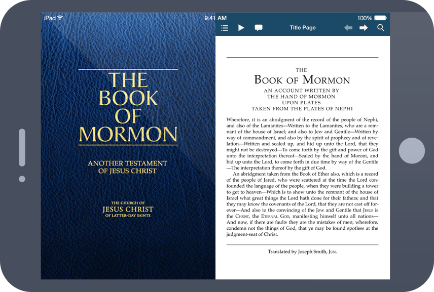

I've never been an avid reader, but lately I've tried to make more of an effort to read more good books. Mark Twain once said, "The man who does not read good books has no advantage over the man who can't read." Here's a list of books I've recently read or I'm currently reading or listening to.
